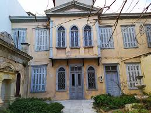
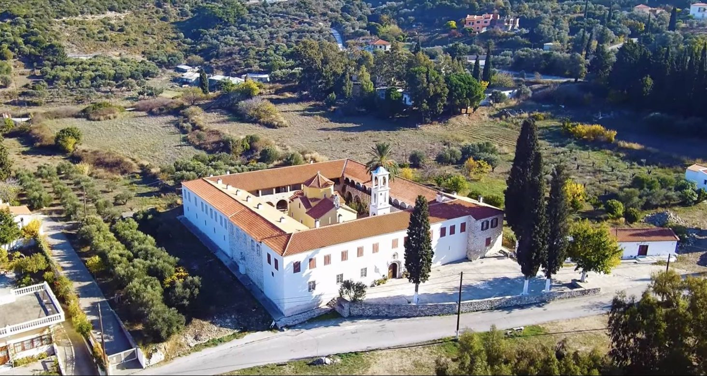
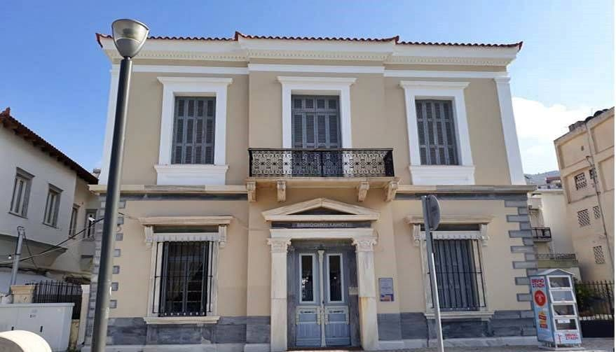
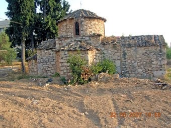
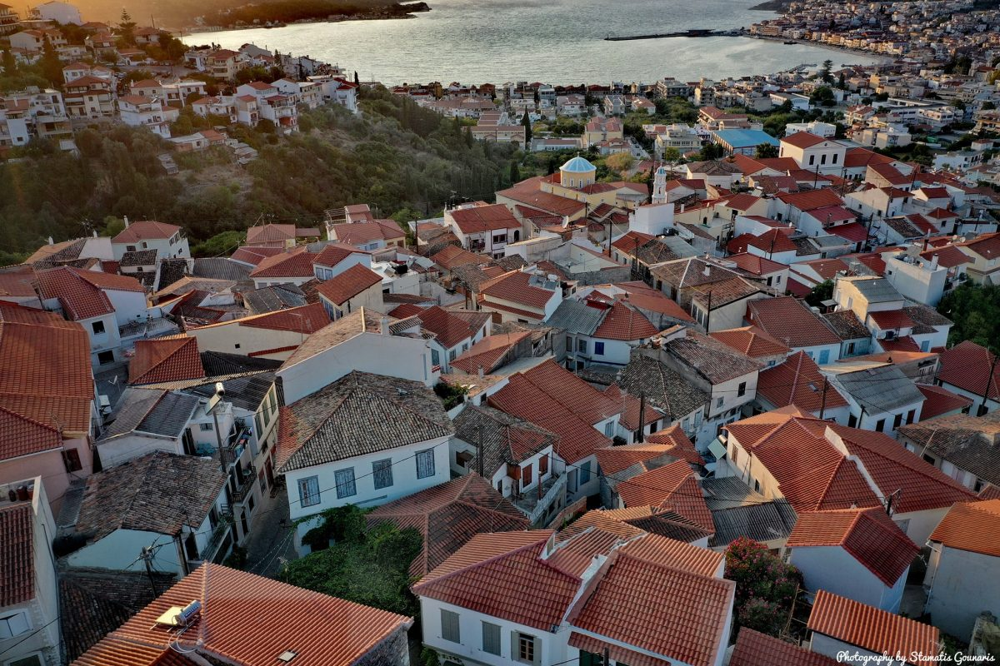

Αξίζει να επισκεφθείτε τη Σάμο κατά τη διάρκεια των εορτών του Πάσχα και να θαυμάσετε από κοντά
το φαντασμαγορικό έθιμο των «Τουφεκιών».
Το έθιμο πραγματοποιείται την Κυριακή της Ανάστασης στον Μαραθόκαμπο τα τελευταία 100 χρόνια
και έχει τις ρίζες του στην ελληνική επανάσταση του 1821. Για τη διεξαγωγή του, οι κάτοικοι του νησιού
προετοιμάζονται μήνες πριν το Πάσχα.
Μαζεύουν τα υλικά και υπό την καθοδήγηση των πιο έμπειρων, κατασκευάζουν έναν μεγάλο αριθμό
εκτοξευτήρων, τα οποία τα τοποθετούν σε ασφαλές μέρος πάνω στο χώμα. Το μεσημέρι της Κυριακής,
όλες οι ενορίες συναντιούνται σε μια συγκεκριμένη τοποθεσία και δίνουν το σύνθημα για να
ξεκινήσουν οι «Τουφεκιές».
Μπορείτε επιπλέον να δείτε σε κάθε περιοχή στο Βαθύ
|  |  | |
|  |  |  |